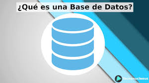

mi pagina con Bootstrap
Bootstrap es un framework front-end utilizado para desarrollar aplicaciones web y sitios mobile first o sea, con un layout que se adapta a la pantalla del dispositivo utilizado por el usurio.
| # | Nombre | Paterno | Materno |
|---|---|---|---|
| 1 | Luis | Ramos | Gomez |
| 2 | Maria | Castro | Lopez |
| 3 | Carlos | Sanchez | Diaz |
compiladores
¿que es?
Es un Software que traduce un programa escrito en un lenguaje de programación de alto nivel (C / C ++, COBOL, etc.) en lenguaje de máquina.
 video
video
Contabilidad
¿que es ?
Es una herramienta clave para conocer en qué situación y condiciones se encuentra una empresa y, con esta documentación, poder establecer las estrategias necesarias con el objeto de mejorar su rendimiento económico.
videoBase de datos
¿que es?
Es una colección organizada de información estructurada, o datos, típicamente almacenados electrónicamente en un sistema de computadora.
 video